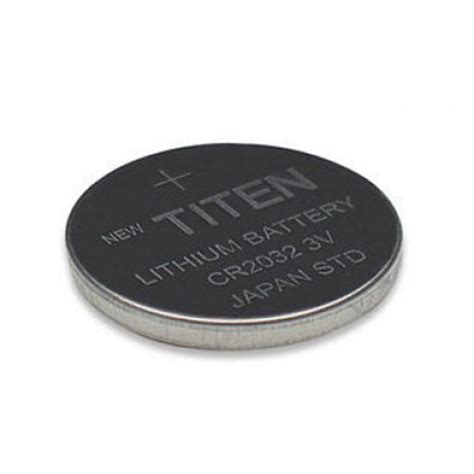

Bateria
Como a bateria CMOS se parece:

Bem essa coisa pequena que se parece com uma moeda é chamada de bateria CMOS, bem ela não é usada para
para ligar o computador, mas... Ela tem uma função tão importante quanto você imagina, pois, ela mantém
a configuração do BIOS/UEFI mesmo quando o PC está desligado ou desconectado da tomada, ela também mantém
o relógio interno do computador funcionando, tipo, sem ela quando você desligasse o seu computador ele esquece
a hora e a data e até mesmo configurações de hardware
Curiosidades legais sobre a bateria CMOS:
Essa bateria pode durar até de 3-10 anos dependendo do uso
Se acabar, o PC liga, mas você ainda precisa configurar data, hora e BIOS toda vez que ligar.
Essa bateria geralmente é uma bateria CR2032.